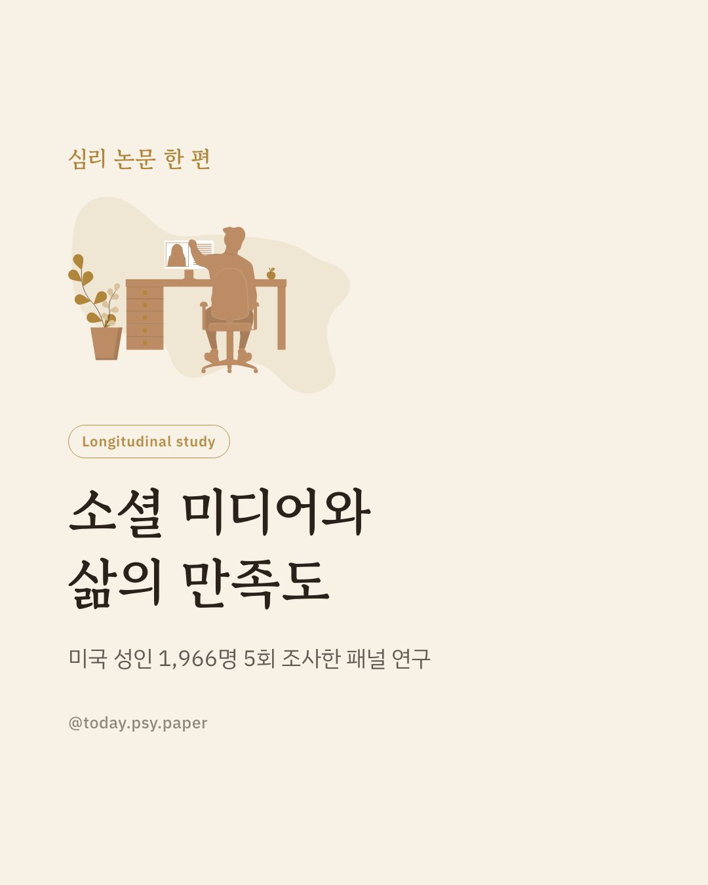
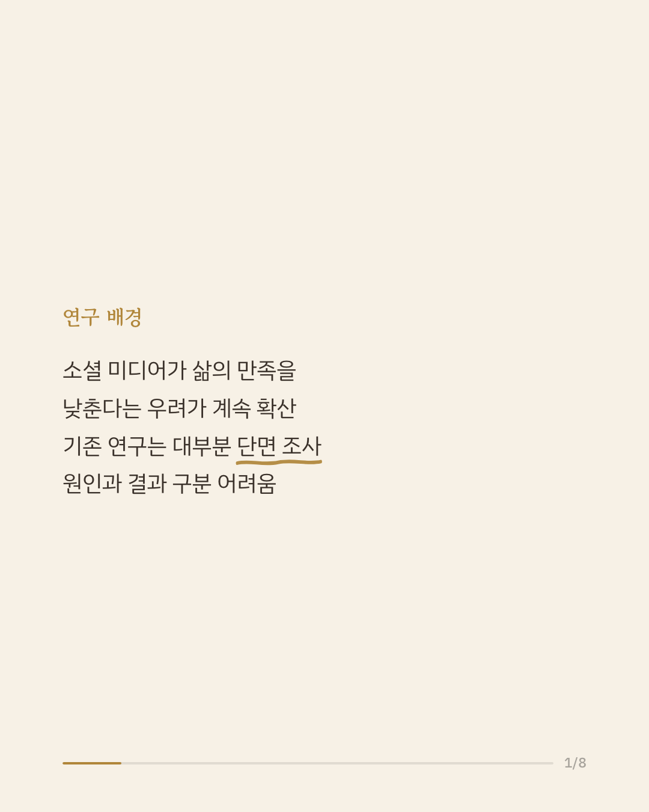
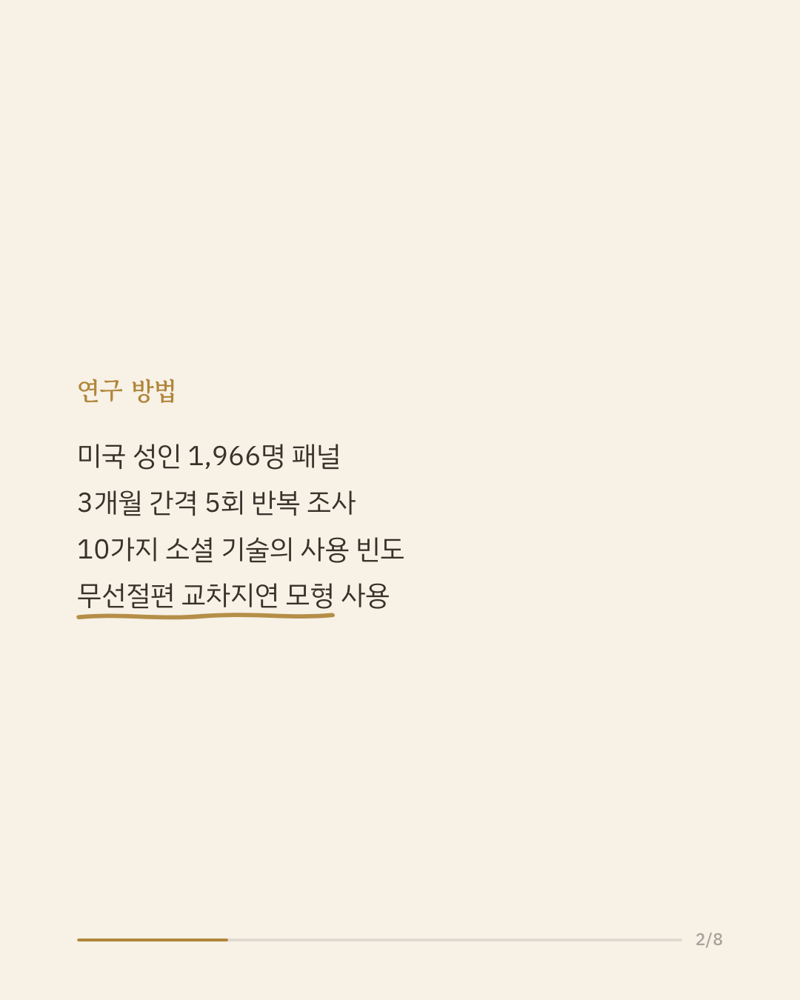
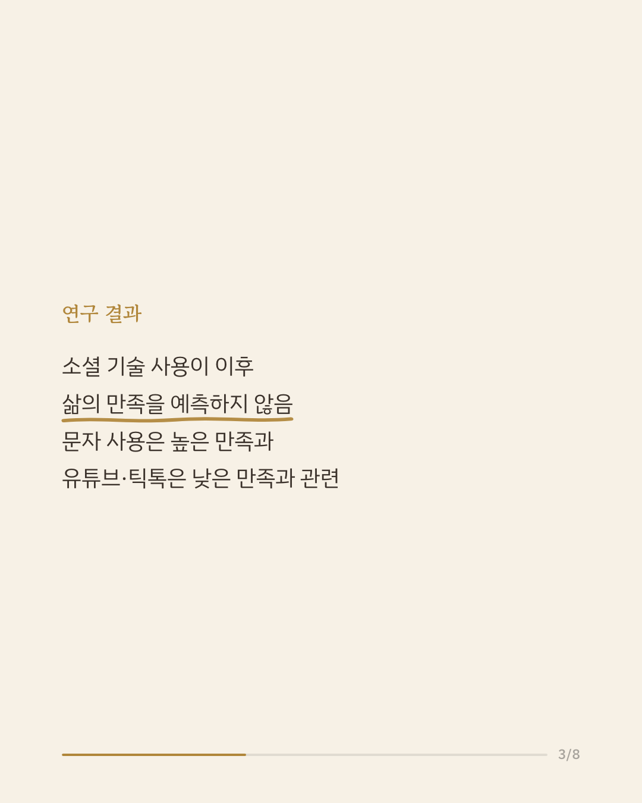
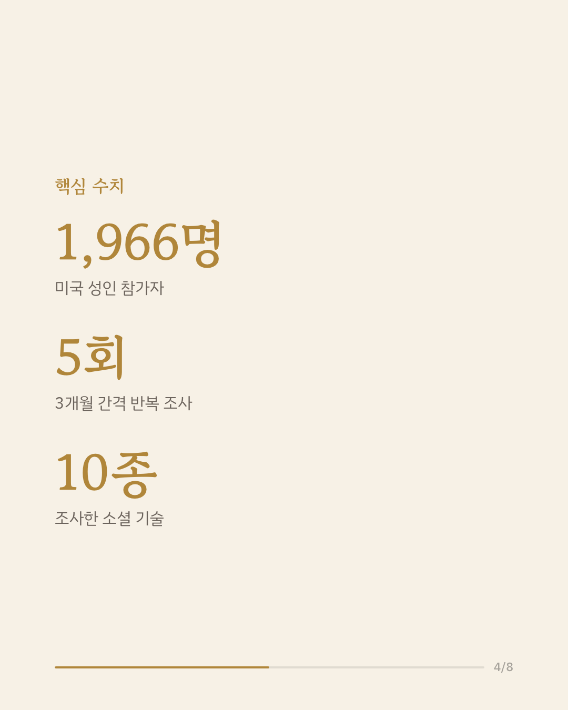
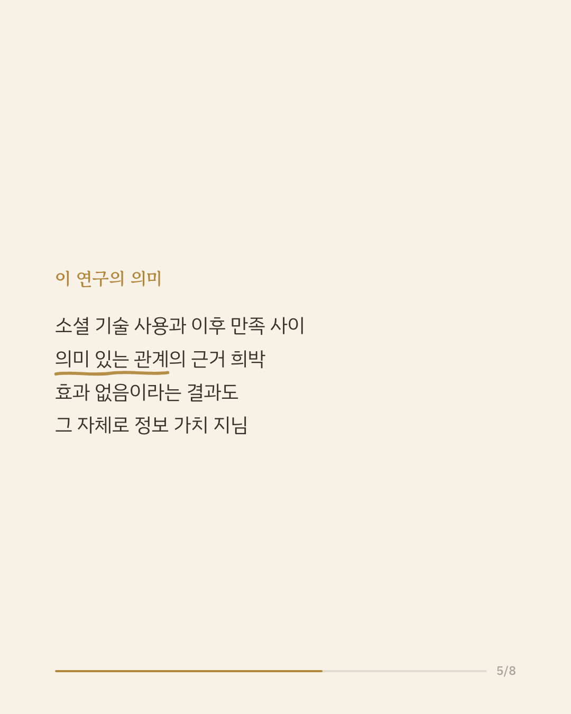
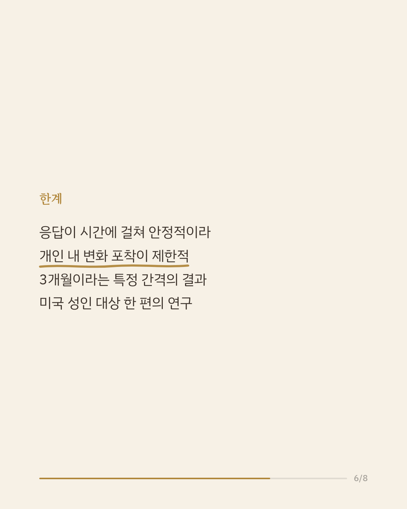
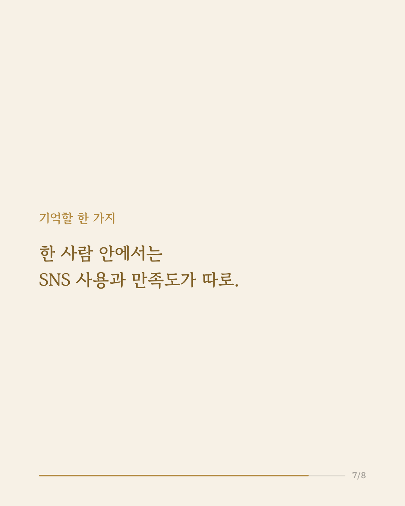
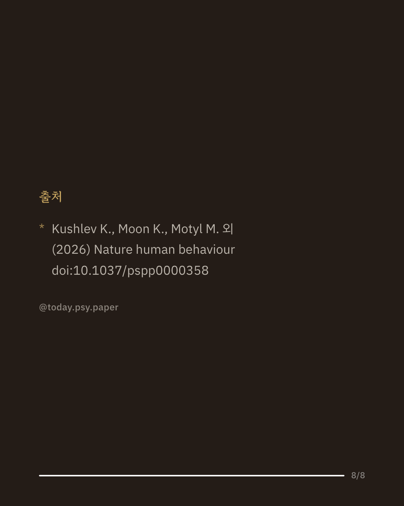

소셜 미디어가 삶의 만족도를 떨어뜨린다는 우려는 오래전부터 있었습니다. 하지만 기존 연구는 대부분 한 시점만 조사한 것이라, 원인과 결과를 가리기 어려웠습니다. 이 연구는 미국 성인 1,966명을 3개월 간격으로 다섯 번 조사해, 열 가지 소셜 미디어 사용과 삶의 만족도의 관계를 시간 순서까지 따져 살펴봤습니다. 분석 결과, 어떤 소셜 기술 사용도 이후의 삶의 만족도 변화를 예측한다는 뚜렷한 근거는 나오지 않았습니다. 사람들 사이를 비교했을 때는 문자 메시지를 자주 쓰는 사람이 만족도가 조금 높았고, 유튜브와 틱톡을 자주 보는 사람은 만족도가 조금 낮은 편이었습니다. 효과가 '있다'가 아니라 '뚜렷하지 않다'는 결과도, 소셜 미디어와 행복의 관계를 이해하는 데 중요한 정보입니다. 다만 응답이 시간에 걸쳐 안정적이어서 개인 내 변화를 잡아내는 데 한계가 있었고, 3개월이라는 특정 간격에서 본 결과라는 점도 감안해야 합니다. 단일 연구이므로 확대 해석은 조심해야 합니다. 출처: Nature Human Behaviour (2026), 'Social technology use and life satisfaction in a five-wave panel study of US adults.' #정신건강정보 #심리학연구 #소셜미디어심리 #논문리뷰 #삶의만족도
python3 publish.py 42665656